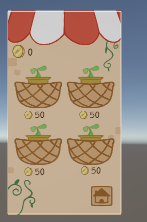
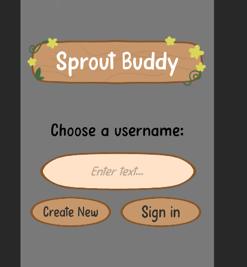
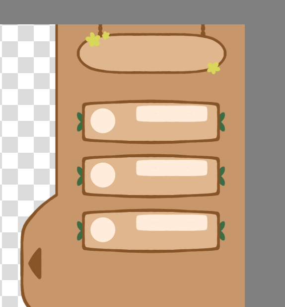
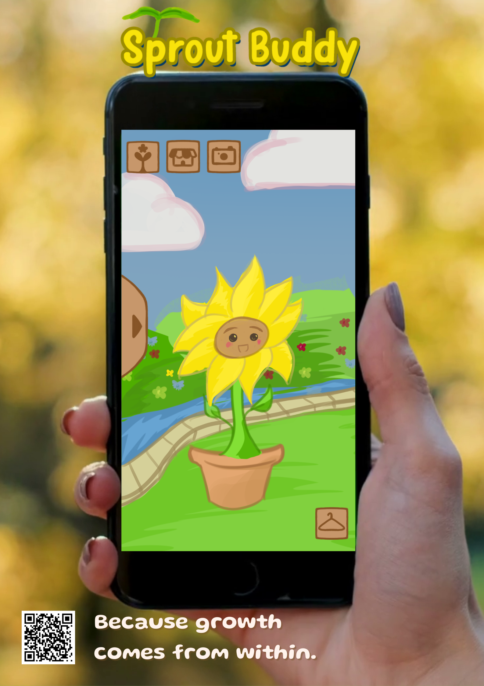

Sprout buddy
Sprout buddy is a virtual slice (so not a fully finished app) of an application made to let people walk more.
Apart from designing most of the game, I was tasked with drawing the UI assets, all of which are displayed down here. That way, the artist could focus on rigging and animating the character, and making promotional material.

Shop
This is the shop, were you can buy sprouts, goodie bags, and other things. Right now, it's empty.
Since the whole game was made in 2D, I had to match the artstyle. It's cutesy, fun, and cozy. The color palette is also appealing, and makes sense. I did my research, and asked for lots of feedback to eventually end up here!

Start screen
This is the start screen, where you sign in with your username. As you can see, it's not fully finished. The background the artist was making, wasn't done yet at this point, which does give the spotlight to the assets that I made for this.
Simple, yet effective and cozy. A warm, fun color palette can do wonders!

Social tab
To push players to go out more, we also added a social aspect to the game, that needed a social tab. That's what this UI is for!
A simple yet effective system that slides open from the side of your screen, and shows all your friends. The color palette matches with everything else, and is very clean.

Homescreen and promotional material
This is the homescreen. The character and background were made by the artist, and all the other assets were made by me. As you can see, they match pretty well, with my assets being a bit cleaner since that is what is expected of buttons.
We edited it on a phone, to put on a poster, and thought about the slogan.
This project was a bit different than the others, focussing more on business aspects, which is why I worked in a smaller team than normal. The other half of the team was focussed on making a business case. I'd say we still made a good game!
Unfortunately, as far as I'm aware, there is no playable demo anywhere, since it's a virtual slice. Sorry!